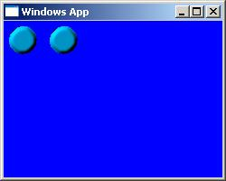

| << W³asne kontrolki, cz. 1 Spis Strona g³ówna |
Bez wzglêdu na to, jak du¿e mo¿liwoœci mo¿na uzyskaæ przez wykorzystywanie standardowych kontrolek do tworzenia w³asnych, i tak wiem, ¿e co innego przyci¹gnê³o ciê do tego artyku³u :-). Zapewne chcia³byœ po prostu zmieniæ wygl¹d tych standardowych, kanciastych, szarych, nudnych kontrolek windowsowych. Oczywiœcie, jest to mo¿liwe.
Spróbujmy stworzyæ swój w³asny przycisk. Jego wygl¹d bêdzie okreœlony przez przygotowan¹ wczeœniej bitmapê. ¯eby by³o ciekawiej, zmienimy te¿ kszta³t tego przycisku na okr¹g³y. Moja bitmapka do tego przycisku wygl¹da tak:
Bitmapa ta bêdzie wspólna dla wszystkich przycisków tworzonej przez nas klasy, tak wiêc dobrze by by³o przechowywaæ j¹ (a dok³adniej: uchwyt do niej) w dodatkowej pamiêci klasy (wspomnieliœmy sobie o tej pamiêci wczeœniej). Zasady korzystania z pamiêci klasy s¹ podobne, jak w przypadku pamiêci okna.
Jak pamiêtamy z odcinka o grafice, rysowanie bitmapy polega na jej kopiowaniu z kontekstu pomocniczego na kontekst ekranu. Ten pierwszy oczywiœcie musimy sobie stworzyæ sami i podobnie jak bitmapê, bêdziemy jego uwchyt przechowywaæ w pamiêci klasy, ¿eby nie trzeba by³o tego kontekstu tworzyæ za ka¿dym razem, gdy chcemy narysowaæ kontrolkê.
Zapewne zauwa¿y³eœ, ¿e bitmapa do naszego przycisku ma urocze, pedalsko ró¿owe t³o. To oczywiœcie nie w ramach poprawnoœci politycznej, tylko aby stworzyæ do tej bitmapy maskê. Maska, jak pamiêtamy, to równie¿ uchwyt typu HBITMAP i równie¿ trzeba j¹ zapamiêtaæ dla ca³ej klasy. Dlatego w³aœnie potrzebujemy 16 bajtów dodatkowej pamiêci (4*3+4).
W poprzednim odcinku kursu rejestrowaliœmy now¹ kontrolkê bezpoœrednio z funkcji WinMain. Nie jest to mo¿e niedopuszczalne, ale i niezbyt eleganckie, gdy¿ kontrolki tworzy siê z regu³y w oddzielnym pliku, a najlepiej w ogóle w osobnym module DLL. Dlatego dobrze by by³o stworzyæ jak¹œ funkcjê, która bêdzie odwala³a ca³¹ robotê zwi¹zan¹ z przygotowaniem nowej kontrolki, to jest rejestracjê jej klasy oraz inicjalizacjê (wczytanie bitmapy, stworzenie maski, stworzenie kontekstu pomocniczego, umieszczenie tego wszystkiego w pamiêci klasy).
Wreszcie jeszcze jedna uwaga: do tej pory korzystaliœmy z superclassingu, a wiêc braliœmy istniej¹c¹ klasê i rozszerzaliœmy jej mo¿liwoœci. Tym razem zrobimy wszystko sami - od zera. Nie bêdzie pobierania informacji o klasie, wiêc wszystkie pola struktury WNDCLASS musimy teraz wype³niæ samodzielnie. Do dzie³a zatem:
|
BOOL RejestrujPrzycisk(HINSTANCE hInst) { WNDCLASS wc; wc.style = 0; //stylowy kibel? ;-) wc.lpszMenuName = NULL; wc.lpszClassName = "BitmapowyPrzycisk"; wc.hInstance = hInst; wc.lpfnWndProc = ControlProc; wc.cbWndExtra = 8; wc.cbClsExtra = 16; wc.hIcon = NULL; wc.hCursor = NULL; wc.hbrBackground = (HBRUSH)GetStockObject(NULL_BRUSH); if(!RegisterClass(&wc)) return FALSE; //wczytanie bitmapy, stworzenie maski i kontekstu dla ca³ej klasy HBITMAP hbmBmp = (HBITMAP)LoadImage(NULL, "przycisk.bmp", IMAGE_BITMAP, 0, 0, LR_LOADFROMFILE), hbmMask = CreateBitmapMask(hbmBmp, RGB(255,0,255)); HDC hdcMem = CreateCompatibleDC(NULL); //tworzymy tymczasowe okno nowej klasy HWND hTmp = CreateWindowEx(0, "BitmapowyPrzycisk", NULL, WS_POPUP, 0, 0, 0, 0, NULL, NULL, hInst, NULL); //zapamiêtanie kontekstu i bitmap w dodatkowej pamiêci okna SetClassLong(hTmp, 0, (LONG)hdcMem); SetClassLong(hTmp, 4, (LONG)hbmBmp); SetClassLong(hTmp, 8, (LONG)hbmMask); return TRUE; } |
Czêœæ kodu odpowiedzialna za rejestrowanie nowej klasy nie jest dla nas niespodziank¹ - przerabialiœmy to ju¿ w poprzednim odcinku kursu (nie mówi¹c ju¿ o tworzeniu okna we wprowadzeniu do WinAPI). Wczytywanie bitmapy to te¿ nie nowoœæ - by³o to ju¿ w odcinku o GDI (tam te¿ znajduje siê "przepis" na funkcjê CreateBitmapMask). Drobnego komentarza mo¿e wymagaæ natomiast funkcja CreateWindowEx. Co ona tu robi? Ano, korzystamy tutaj z us³ug SetClassLong, aby zapamiêtaæ uchwyty w pamiêci klasy, zaœ funkcji tej nie wystarczy niestety sama nazwa klasy - potrzebny jest uwchyt dowolnego okna tej klasy. Dlatego te¿ tworzymy takie okno (do niczego innego nie jest ono wykorzystywane, dlatego te¿ u¿yliœmy takich nietypowych parametrów dla CreateWindowEx). Taka ma³a niedogodnoœæ WinAPI.
Zarezerwowaliœmy te¿ po 8 bajtów dla ka¿dego okna tworzonej przez nas klasy BitmapowyPrzycisk. Bêdzie tam przechowywana informacja, czy przycisk jest aktualnie wciœniêty - aby kod odpowiedzialny za rysowanie przycisku wiedzia³, któr¹ po³ówkê bitmapy ma w danym momencie pokazaæ. Oczywiœcie jest to spora rozrzutnoœæ - jeden bajt (plus cztery nieu¿ywane, jak zwykle) wystarczy³by, ale nie mamy powodu, ¿eby tak sk¹piæ (a na wartoœciach 32-bitowych ³atwiej siê operuje). Powinniœmy zainicjalizowaæ tê pamiêæ w WM_CREATE:
|
case WM_CREATE: { //inicjalizacja stanu przycisku - na niewciœniêty SetWindowLong(hwnd, 0, (LONG)FALSE); //pobierz wymiary bitmapy BITMAP bmInfo; HBITMAP hbmBmp = (HBITMAP)GetClassLong(hwnd, 4); GetObject((HGDIOBJ)hbmBmp, sizeof(BITMAP), &bmInfo); //zmieñ rozmiar przycisku na taki sam, jak ma bitmapa SetWindowPos(hwnd, NULL, 0, 0, bmInfo.bmWidth/2, bmInfo.bmHeight, SWP_NOACTIVATE|SWP_NOMOVE|SWP_NOZORDER); //ustaw okr¹g³y kszta³t HRGN hRgn = CreateEllipticRgn(0,0,bmInfo.bmWidth/2-1,bmInfo.bmHeight-1); SetWindowRgn(hwnd, hRgn, FALSE); } break; |
Robimy tu przy okazji trochê wiêcej rzeczy. Pobieramy wymiary bitmapy wyœwietlanej na naszym przycisku, a nastêpnie dostosowujemy ca³e okno (przycisk) do tego wymiaru. Dziêki temu niezale¿nie od tego, jakie parametry poda u¿ytkownik naszej kontrolki przy wywo³ywaniu CreateWindowEx, przycisk zawsze bêdzie mia³ te same rozmiary (chyba, ¿e u¿ytkownik "rêcznie" zmieni jego rozmiary, czemu mo¿emy z kolei zapobiec, obs³uguj¹c komunikat WM_SIZE). Wreszcie tworzymy sobie region w kszta³cie ko³a i przypisujemy ten region naszemu przyciskowi. Sprawia to, ¿e nie s¹ rysowane fragmenty okna spoza podanego regionu, a tak¿e - ¿e klikniêcie poza tym regionem nie powoduje wys³ania komunikatu do kontrolki (trafia on do okna-rodzica). Zauwa¿, ¿e nie zapamiêtujemy nigdzie uchwytu tego regionu - odk¹d jest on przypisany do okna, mo¿emy go pobraæ przez GetWindowRgn.
Kolejnym krokiem w tworzeniu naszego przycisku bêdzie obs³uga klikniêæ mysz¹. Musimy w zwi¹zku z tym zrobiæ trzy rzeczy. Po pierwsze - zmieniamy stan przycisku w jego pamiêci okna (wciœniêty/niewciœniêty), odrysowujemy przycisk (wywo³ujemy niejawnie WM_PAINT przez InvalidateRgn) oraz przechwytujemy mysz (o tym zaraz).
Wspomnia³em o przechwytywaniu myszy. Po co to? Otó¿ nasz przycisk ma dzia³aæ tak, jak standardowe przyciski Windows - kiedy u¿ytkownik trzyma wciœniêty przycisk myszy nad kontrolk¹, a nastêpnie kursor mu siê zeœlizguje poza obrêb kontrolki, przycisk siê "wyciska". ¯eby otrzymaæ taki sam efekt, musimy jakoœ sprawiæ, ¿eby komunikat WM_LBUTTONUP zosta³ wys³any kontrolce tak¿e w tym momencie, gdy kursor wyje¿d¿a poza jej obrêb. Dlatego w³aœnie w WM_LBUTTONDOWN wywo³ujemy SetCapture - od tego momentu do kontrolki docieraj¹ WSZYSTKIE komunikaty zwi¹zane z mysz¹, bez wzglêdu na to, gdzie jest akurat kursor. W obs³udze WM_LBUTTONUP "oddajemy" myszkê z powrotem systemowi dziêki ReleaseCapture i wszystko wraca wówczas do normy:
|
case WM_LBUTTONDOWN: { SetWindowLong(hwnd, 0, (LONG)TRUE); InvalidateRgn(hwnd, NULL, TRUE); SetCapture(hwnd); } break; case WM_LBUTTONUP: { SetWindowLong(hwnd, 0, (LONG)FALSE); InvalidateRgn(hwnd, NULL, TRUE); ReleaseCapture(); //Wyœlij komunikat WM_COMMAND SendMessage(GetParent(hwnd), WM_COMMAND, (WPARAM)MAKELONG((WORD)GetWindowLong(hwnd, GWL_ID), BN_CLICKED), (LPARAM)hwnd); } break; |
Obydwa komunikaty s¹ zbudowane podobnie, ale WM_LBUTTONUP pe³ni jeszcze jedn¹, dodatkow¹ funkcjê - wysy³a komunikat WM_COMMAND do okna-rodzica. Dziêki temu mo¿emy przypisaæ naszemu przyciskowi jakieœ zdarzenie i obs³u¿yæ je w komunikacie WM_COMMAND, tak jak dla standardowego przycisku.
To oczywiœcie jeszcze nie koniec, jeœli chodzi o mysz. Musimy przecie¿ obs³u¿yæ to przechwycone zeœlizgniêcie siê kursora z przycisku. ¯eby przekonaæ siê, czy rzeczywiœcie dany ruch mysz¹ jest tym zeœlizgniêciem, sprawdzamy, czy kursor znajduje siê w regionie okna. Region ten nale¿y pobraæ funkcj¹ GetWindowsRgn. Funkcja ta ¿¹da jednak podania uchwytu do dowolnego, istniej¹cego ju¿ regionu, który nastêpnie zostanie zast¹piony kopi¹ regionu pobieranego (trochê zakrêcone, ale trudno). Dlatego w³aœnie tworzymy tu sobie taki tymczasowy, kilkupikselowy region.
Trzeba zwróciæ uwagê na to, ¿e wspó³rzêdne regionu s¹ wyra¿ane wzglêdem okna (przycisku), natomiast wspó³rzêdne kursora, pobierane funkcj¹ GetCursorPos - wzglêdem ekranu. St¹d konwersja za pomoc¹ ScreenToClient. Teraz dopiero mo¿emy sprawdziæ, czy kursor jest nad kontrolk¹, do czego wykorzystujemy funkcjê PtInRegion. Jeœli kursor znajdzie siê poza przyciskiem, to wysy³amy komunikat WM_LBUTTONUP (co sprawia, ¿e przycisk siê "wyciska") Natomiast ten drugi warunek w instrukcji if s³u¿y do tego, ¿eby przycisk rysowany by³ tylko wtedy, gdy rzeczywiœcie zmienia siê jego stan, co eliminuje mo¿liwe miganie.
|
case WM_MOUSEMOVE: { POINT cur; HRGN hRgn = CreateRectRgn(0,0,1,1); GetCursorPos(&cur); ScreenToClient(hwnd, &cur); GetWindowRgn(hwnd, hRgn); if(!PtInRegion(hRgn, cur.x, cur.y) && (BOOL)GetWindowLong(hwnd, 0)) SendMessage(hwnd, WM_LBUTTONUP, wParam, lParam); } break; |
Pora zaj¹æ siê najwa¿niejsz¹ czêœci¹ zadania, czyli w³aœciwym kodem rysuj¹cym przycisk. Potrzebujemy w tym donios³ym momencie wszystkich informacji, jakie wpakowaliœmy do pamiêci klasy, a wiêc uchwytów: do bitmapy, do maski i do kontekstu pomocniczego. Potrzebujemy te¿ "wyci¹gn¹æ" z pamiêci okna, czy przycisk jest aktualnie wciœniêty, czy te¿ nie. Nastêpnie pobieramy wymiary bitmapy, no i wreszcie rysujemy za pomoc¹ BitBlt. Dodam jeszcze, ¿e szerokoœæ bitmapy dzielimy przez 2, poniewa¿ za ka¿dym razem rysujemy tylko po³ówkê bitmapy (raz jedn¹, raz drug¹).
|
case WM_PAINT: { PAINTSTRUCT ps; HDC hdc = BeginPaint(hwnd, &ps); //wczytaj uchwyty z dodatkowej pamiêci klasy HBITMAP hbmBmp, hbmMask; HDC hdcMem; hdcMem = (HDC)GetClassLong(hwnd, 0); hbmBmp = (HBITMAP)GetClassLong(hwnd, 4); hbmMask = (HBITMAP)GetClassLong(hwnd, 8); //pobierz wymiary bitmapy BITMAP bmInfo; GetObject((HGDIOBJ)hbmBmp, sizeof(BITMAP), &bmInfo); //sprawdŸ, czy przycisk jest wciœniêty BOOL bWcisniety = (BOOL)GetWindowLong(hwnd, 0); WORD x = (bWcisniety) ? bmInfo.bmWidth/2 : 0; //rysowanie bitmapy z mask¹ SelectObject(hdcMem, hbmMask); BitBlt(hdc, 0, 0, bmInfo.bmWidth/2, bmInfo.bmHeight, hdcMem, x, 0, SRCAND); SelectObject(hdcMem, hbmBmp); BitBlt(hdc, 0, 0, bmInfo.bmWidth/2, bmInfo.bmHeight, hdcMem, x, 0, SRCPAINT); EndPaint(hwnd, &ps); } break; |
Oczywiœcie wszystkie podane wy¿ej komunikaty dotycz¹ ControlProc i tam te¿ mamy je umieœciæ. Pora wytestowaæ, coœmy tutaj zmajstrowali. U¿ycie naszej pachn¹cej œwie¿oœci¹ kontrolki polegaæ bêdzie na tym, ¿e wywo³amy sobie funkcjê RejestrujPrzycisk, a nastêpnie bêdziemy tworzyæ kolejne przyciski funkcj¹ CreateWindowEx:
|
if(!RejestrujPrzycisk(hThisInstance)) { MessageBox(g_hwnd, "Nie uda³o siê zarejestrowaæ klasy przycisku.", "Yh...", MB_ICONSTOP); DestroyWindow(g_hwnd); } HWND hControl = CreateWindowEx(0, "BitmapowyPrzycisk", NULL, WS_CHILD|WS_VISIBLE, 5, 5, 32, 32, g_hwnd, (HMENU)IDC_BUTTON1, hThisInstance, NULL); if(hControl==NULL) { MessageBox(g_hwnd, "Nie uda³o siê stworzyæ przycisku.", "Yh...", MB_ICONSTOP); DestroyWindow(g_hwnd); } HWND hControl2 = CreateWindowEx(0, "BitmapowyPrzycisk", NULL, WS_CHILD|WS_VISIBLE, 50, 5, 32, 32, g_hwnd, (HMENU)IDC_BUTTON2, hThisInstance, NULL); if(hControl2==NULL) { MessageBox(g_hwnd, "Nie uda³o siê stworzyæ przycisku 2.", "Yh...", MB_ICONSTOP); DestroyWindow(g_hwnd); } |
To wystarczy, by po uruchomieniu aplikacji ukaza³a nam siê para piêknych (no, nie przesadzajmy mo¿e - takich sobie), okr¹g³ych, kolorowych przycisków. Stworzyliœmy je ca³kiem samodzielnie, nie korzystaj¹c w ogóle z klas dostarczonych razem z Windowsem. Teraz pozostaje tylko umieœciæ nasz kod w jakimœ DLL-u i mamy gotowy komponent do swoich przysz³ych aplikacji:

Mo¿emy jeszcze obs³u¿yæ sobie WM_COMMAND (tym razem ju¿ w procedurze g³ównego okna), ¿eby sprawdziæ, czy jest on wysy³any prawid³owo:
|
case WM_COMMAND: { if(HIWORD(wParam)==BN_CLICKED) { char buf[255]; wsprintf(buf, "Wciœniêty przycisk o identyfikatorze %hu.", LOWORD(wParam)); MessageBox(hwnd, buf, "Test", MB_ICONINFORMATION); } } break; |
Powinno byæ OK :-). Oczywiœcie trudno jeszcze nazwaæ nasz¹ kontrolkê profesjonalnie zrobion¹. Brakuje jeszcze wielu rzeczy, które powinna ona posiadaæ, ale to ju¿ zadanie dla ciebie ;-).
| << W³asne kontrolki, cz. 1 Spis Strona g³ówna |